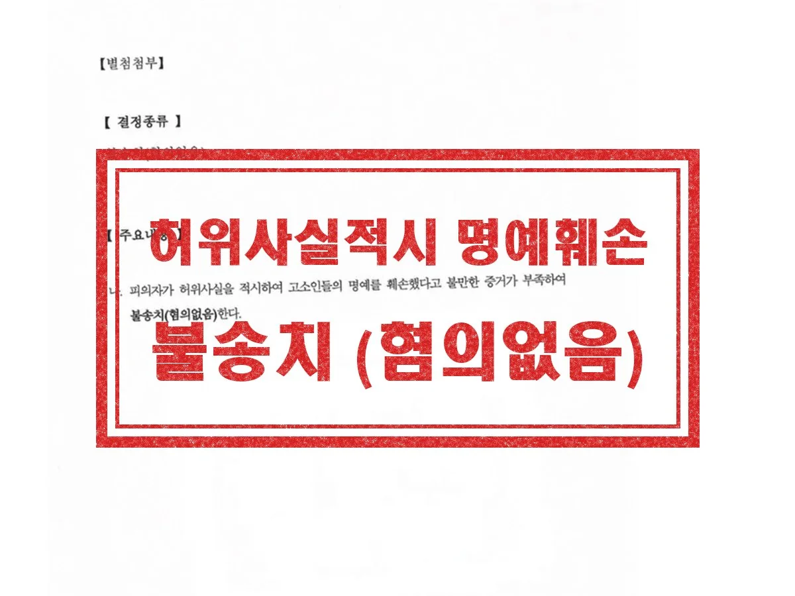

형사 · 군형사
허위사실적시 명예훼손
평소 알고 지내던 고소인과 사이가 틀어져 다른 지인에게 울분을 토한 것을, 고소인이 허위사실 유포로 고소한 사안입니다. 해당 발언이 사실의 적시가 아닌 단순 의견표명에 불과한 점, 허위 사실이 아니라는 점을 적극 변소했습니다.
결과 경찰 불송치
Guide
군산 명예훼손 변호사 상담 안내
| 관할 | 군산경찰서 → 전주지방공소청 군산지청 → 전주지방법원 군산지원 |
|---|---|
| 관련 법조 | 형법 제307조(명예훼손), 제310조(위법성의 조각), 제312조 제2항(반의사불벌), 정보통신망법 제70조(비방 목적 명예훼손) |
| 담당 변호사 | 이민규 대표변호사 (경찰대 졸업, 군산경찰서 수사과 근무) |
| 관련 분야 | 일반형사·군형사 분야 안내 → |
명예훼손은 특정인의 사회적 평가를 떨어뜨릴 만한 구체적인 사실을 여러 사람이 알 수 있게 드러낼 때 성립합니다. 구체적 사실 없이 경멸적인 표현만 했다면 명예훼손보다 모욕이 문제됩니다.
우리 형법은 진실한 사실을 적시한 경우에도 명예훼손이 될 수 있도록 하되, 진실한 사실을 오로지 공공의 이익을 위해 적시했다면 처벌하지 않습니다. 같은 내용이라도 허위인지, 인터넷으로 퍼뜨렸는지에 따라 적용 법률과 법정형이 크게 달라집니다.
Issues
추상적인 비난인지 구체적 사실을 드러낸 것인지에 따라 명예훼손과 모욕이 갈립니다.
문장 하나가 아니라 당사자 관계, 대화의 앞뒤 흐름, 발언 전체의 취지를 함께 봅니다.
진실한 사실을 오로지 공공의 이익을 위해 적시했다면 처벌하지 않습니다. 허위 사실에는 이 예외가 없습니다.
형법상 사실 적시는 2년 이하 징역·금고 또는 500만 원 이하 벌금, 허위 사실은 5년 이하 징역, 10년 이하 자격정지 또는 1천만 원 이하 벌금입니다.
인터넷·SNS에서 비방할 목적으로 한 경우 사실 적시는 3년 이하 징역 또는 3천만 원 이하 벌금, 허위 사실은 7년 이하 징역, 10년 이하 자격정지 또는 7천만 원 이하 벌금입니다.
피해자가 처벌을 원하지 않는다는 의사를 밝히면 처벌할 수 없으므로 수사 단계의 합의가 결과를 바꿀 수 있습니다.
Process
01
문제 된 글이나 발언 전체를 확보해 명예훼손인지 모욕인지, 어떤 법률이 적용되는지 검토합니다.
02
캡처(작성자·작성 시각 포함), URL, 페이지 저장, 대화방 참여 인원, 들은 사람의 사실확인서를 확보합니다.
03
피해자는 고소장을 내고, 고소당한 쪽은 사실 여부와 공익성, 비방 목적을 중심으로 대응합니다.
04
처벌불원 의사 표시가 가능한 사건인지 보고 합의를 검토하며, 이후 민사 위자료 문제도 함께 정리합니다.
Results

평소 알고 지내던 고소인과 사이가 틀어져 다른 지인에게 울분을 토한 것을, 고소인이 허위사실 유포로 고소한 사안입니다. 해당 발언이 사실의 적시가 아닌 단순 의견표명에 불과한 점, 허위 사실이 아니라는 점을 적극 변소했습니다.
결과 경찰 불송치
실제 수행한 사건의 결과를 의뢰인이 특정되지 않도록 정리한 것입니다. 사건의 결과는 개별 사실관계와 증거에 따라 달라지며, 과거의 결과가 다른 사건에서도 같은 결과로 이어지는 것은 아닙니다. 성공사례 전체 보기 →
Columns
겁부터 먹고 글을 지우면 내게 유리한 맥락까지 사라질 수 있습니다. 먼저 명예훼손인지 모욕인지, 의견인지 사실인지 따져 보세요.
사실 적시와 모욕의 경계, 진실이어도 처벌되는 경우, 네 가지 유형의 처벌, 증거 확보 방법까지.
공연성·특정성·모욕적 표현의 세 요건, 처벌 수위, 고소당한 뒤 흔한 실수, 합의 시 유의점까지.
일대일 메시지와 전파가능성, 닉네임·집단 표현의 특정성, 맥락에 따른 모욕성 판단까지.
조사 일정 조율, 고소 내용 철회 권유에 대한 대응, 범죄일람표 작성, 진술조서 확인과 보충자료까지.
FAQ
형사 다른 안내
분야를 정해서 연락 주실 필요 없습니다. 무슨 일이 있었는지만 말씀해 주시면 어떤 절차로 가는 사건인지 정리해 드립니다.